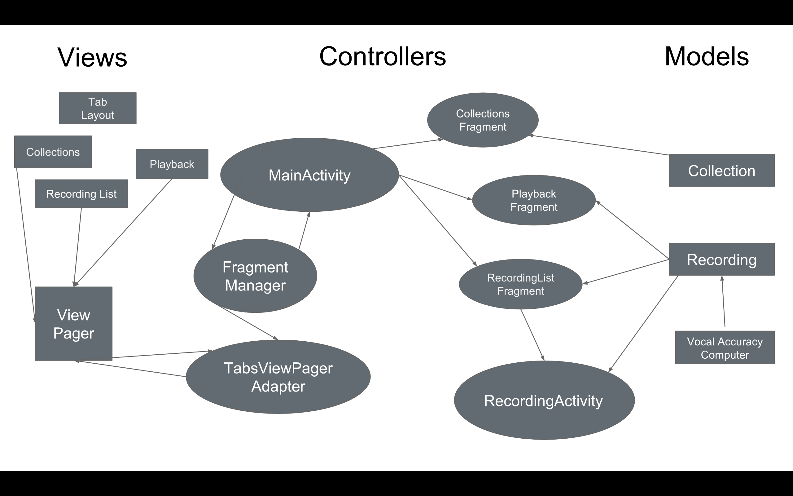
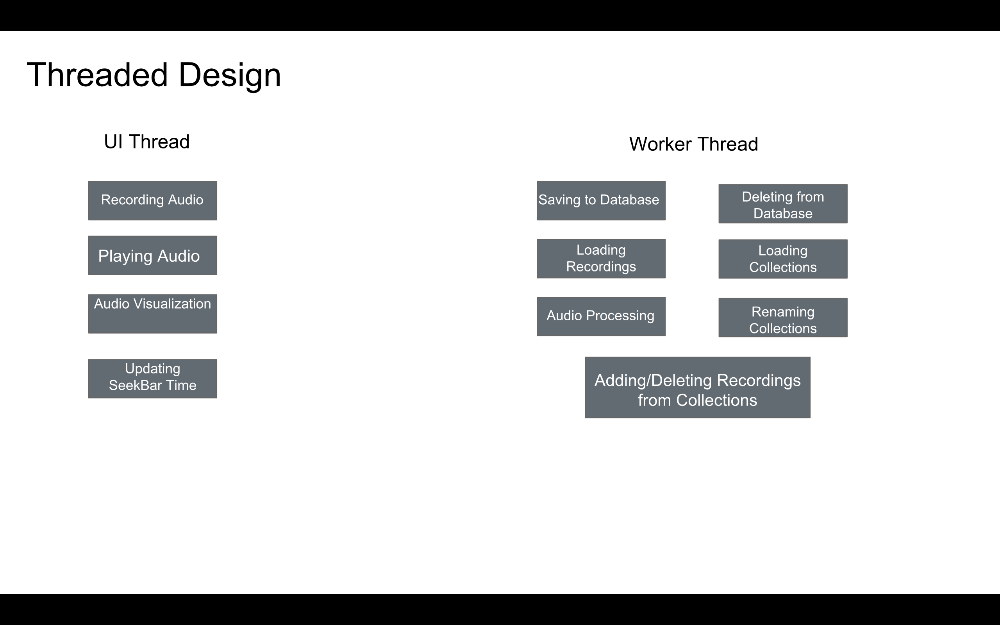

Tune Me
Team Members
Jessie Anderson
Ci-Yu Yan
Project Description
Tune Me uses pitch detection and Android's sound card to tell users how
accurate their singing is. Users press a start button, begin singing,
and then press a stop button when they are done recording. The app will
display their overall note accuracy for that recording, as well as a color bar representing how accurate they were at each point in the song. The colors will be a spectrum ranging from red for bad, to yellow for mediocre, to green for accurate. The color bar will have a slider that users can drag to any point in the recording that they want to listen to. Users will be able to save or delete the recording; if they choose to save the recording, they will be able to name the file. Saved recordings will be available in the app for users to pull up and listen to at any time.
This app will require several technologies, some that are native to Android,
some that require access to the device's hardware,
and some that will require our own implementation. We will have to
determine which pitch detection algorithm we will use and then implement
it. Once we have the note accuracy for an entire song, we will need to
implement a way to map pitch accuracy onto the color bar spectrum.
In addition, we will need to use Android's sound card API to capture
and save audio. Finally, we will be using external storage to save
the recordings and the SQLite database to save information about the
recordings, including the file name, the overall pitch accuracy, and the
accuracy at each point in the song.
MVC


Current Features
- Saving and recording audio from the user - Ci-Yu
- Displaying recording history - Jessie
- Collections of recordings: adding, naming, & renaming collections;
adding & removing recordings from collections - Jessie
- Setup of local SQLite database - Jessie
- Using TarsosDSP to derive pitches from a recording - Ci-Yu
- Process extracted pitches and determining the accuracy - Jessie
- Creating a visualization of the audio recordings - Ci-Yu
Libraries Used
Download
Presentation
Git Repo